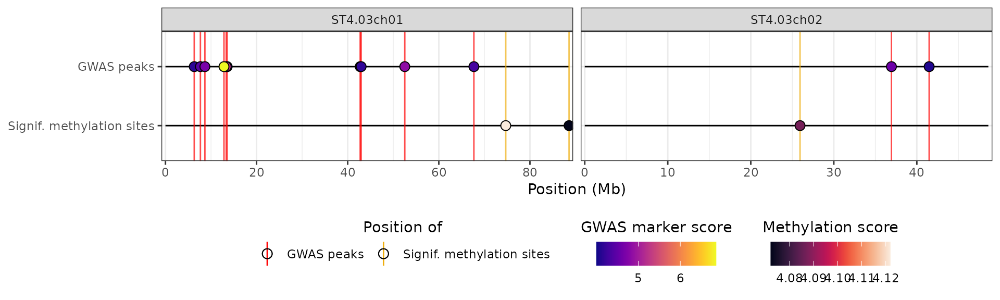

While hidecan was designed with the goal of representing GWAS and DE results with lists of candidate genes, in principle it can be used to visualise any genomic feature that can be mapped to a physical location on the genome; for example significant QTLs, HiC data etc. To facilitate this, it is possible to add one or more custom data types into a hidecan plot.
Adding one custom data type
Let us start by simulating a new set of results – for simplicity we’ll assume that we have results from a QTL mapping on the same markers that were used for the GWAS analysis:
x <- get_example_data()
set.seed(586)
x$QTL <- x$GWAS |>
## shuffling the scores around to get different "significant" markers
mutate(score = sample(score, n(), replace = FALSE))We can add this new data to the hidecan plot through the
custom_list argument of the hidecan_plot()
function (we’ll only look at two chromosomes for simplicity), and use
the score_thr_custom argument to set the significance
threshold on the score:
hidecan_plot(
gwas_list = x[["GWAS"]],
score_thr_gwas = -log10(0.0001),
chroms = c("ST4.03ch01", "ST4.03ch02"),
custom_list = x[["QTL"]],
score_thr_custom = -log10(0.0001)
)Importantly, the data-frame that is passed to
custom_list must contain at least the following columns:
chromosome, position and score.
If the genomic features you want to add are genes for example (with a
start and end position) you need to calculate the position
column yourself.
We can customise the labels and colours used for this custom track
with the help of the hidecan_aes() function:
plot_aes <- hidecan_aes()
str(plot_aes, max.level = 1)
#> List of 4
#> $ GWAS_data_thr :List of 5
#> $ DE_data_thr :List of 5
#> $ CAN_data_thr :List of 5
#> $ CUSTOM_data_thr:List of 5
plot_aes[["CUSTOM_data_thr"]]
#> $y_label
#> [1] "Custom track"
#>
#> $line_colour
#> [1] "darkgoldenrod2"
#>
#> $point_shape
#> [1] 21
#>
#> $show_name
#> [1] FALSE
#>
#> $fill_scale
#> <ScaleContinuous>
#> Range:
#> Limits: 0 -- 1In particular, we will change the name given to the track, as well as the name used for the legend:
plot_aes$CUSTOM_data_thr$y_label <- "Signif. QTLs"
plot_aes$CUSTOM_data_thr$fill_scale$name <- "QTL score"
# We could also change the entire legend with:
# default_aes$CUSTOM_data_thr$fill_scale <- scale_fill_viridis(
# "QTL score",
# option = "inferno",
# guide = guide_colourbar(
# title.position = "top",
# title.hjust = 0.5,
# order = 4 # ensures this legend is shown after the one for DE scores
# )
# )We will use these values in the hidecan plot by passing the list
through the custom_aes argument:
hidecan_plot(
gwas_list = x[["GWAS"]],
score_thr_gwas = -log10(0.0001),
chroms = c("ST4.03ch01", "ST4.03ch02"),
custom_list = x[["QTL"]],
score_thr_custom = -log10(0.0001),
custom_aes = plot_aes
)
Note that, as for the other supported data types, we can pass more
than one data-frame to custom_list to get several tracks of
QTLs:
## Simulating a second set of QTL results
set.seed(779)
x$QTL2 <- x$QTL |>
mutate(score = sample(score, n(), replace = FALSE))
hidecan_plot(
gwas_list = x[["GWAS"]],
score_thr_gwas = -log10(0.0001),
score_thr_de = -log10(0.05),
log2fc_thr = 0,
chroms = c("ST4.03ch01", "ST4.03ch02"),
custom_list = list("Trait 1" = x[["QTL"]],
"Trait 2" = x[["QTL2"]]),
score_thr_custom = -log10(0.0001),
custom_aes = plot_aes
)By default, the values in the score column are shown as
the points colour, but we can hide it by setting the
fill_scale element of our aesthetics list to
NULL. Also, we can add labels to the significant points, by
adding a name column to the data-frame, and setting the
show_name element of our aesthetics list to
TRUE:
## Creating fake names for the markers
set.seed(342)
x$QTL <- x$QTL |>
mutate(name = sample(LETTERS, n(), replace = TRUE))
plot_aes2 <- plot_aes
plot_aes2$CUSTOM_data_thr$show_name <- TRUE
plot_aes2$CUSTOM_data_thr$fill_scale <- NULL
hidecan_plot(
gwas_list = x[["GWAS"]],
score_thr_gwas = -log10(0.0001),
chroms = c("ST4.03ch01", "ST4.03ch02"),
custom_list = x[["QTL"]],
score_thr_custom = -log10(0.0001),
custom_aes = plot_aes2
)Adding several custom data types
It is also possible to add more than one custom data type. For example, let’s say that we want to add information about differentially methylated regions to the plot. We’ll use the example DE data to simulate our methylated dataset:
set.seed(554)
x$METH <- x$DE |>
mutate(
position = (start + end) / 2, ## need to calculate the position of the regions
score = sample(-log10(padj), n(), replace = FALSE),
name = sample(letters, n(), replace = TRUE)
)Importantly, the significance threshold encoded by the
score_thr_custom argument of hidecan_plot()
will be used for all custom datasets, so if we don’t want to use the
same significance threshold on our QTL and methylation data, we need to
perform the filtering of significant features by hand before and then
set the threshold to 0:
The key to specifying that the two custom datasets are different data
types is to add to the new data-frame an argument called
aes_type, which is simply a label that tells the function
which aesthetics settings it should use from the list passsed to
custom_aes. We will retain the aesthetics we have set for
the QTL scores, and create new aesthetics for the methylation data:
## Adding the aes_type attribute to the methylation data
attr(x$METH, "aes_type") <- "METH"
## The name of the new element in the aesthetics list must match the value of
## the aes_type attribute
plot_aes$METH <- list(
y_label = "DMRs",
line_colour = "purple",
point_shape = 24,
show_name = TRUE,
fill_scale = scale_fill_viridis(
"DM score",
option = "mako",
guide = guide_colourbar(
title.position = "top",
title.hjust = 0.5,
order = 5
)
)
)
hidecan_plot(
gwas_list = x[["GWAS"]],
score_thr_gwas = -log10(0.0001),
chroms = c("ST4.03ch01", "ST4.03ch02"),
custom_list = list(x[["QTL"]], x[["METH"]]),
score_thr_custom = 0, ## no filtering, has been done manually
custom_aes = plot_aes
)There are no restrictions on the number of custom data types that can be added to a hidecan plot.